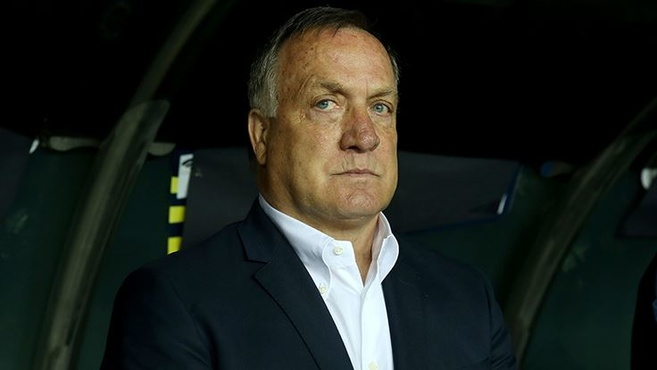

68 66 57 55 49 49 43 42 40 40 40 39 38 36 35 27 26 24
68 66 57 55 49 49 43 42 40 40 40 39 38 36 35 27 26 24
Takım O P
19 Mayıs tatili ile hafta sonu tatilini birleştiren yolcular Atatürk Havalimanı’nda yoğunluğa neden oldu. Dış hatlardan seyahat eden Fenerbahçe Teknik Direktörü Dick Advocaat da kuyrukta beklerken görüntülendi. Kupaya veda sonrası Hollandalı hoca, İstanbul'dan ayrıldı.
Atatürk Havalimanı Dış Hatlar Terminali’nde güvenlik noktası, check-in bankoları ve pasaport noktasında uzun kuyruklar oluştu. Bu arada yurt dışına çıkmak isteyen yeşil ve gri pasaport sahipleri ile kimlikle KKTC’ ye seyahat edecek yolcuların pasaport kontrol öncesinde işlem yaptığı noktada uzun kuyruk oluştu.4 günlük tatili fırsat bilen yolcular pasaport sırasında ortalama 40 dakika beklemek zorunda kaldı.